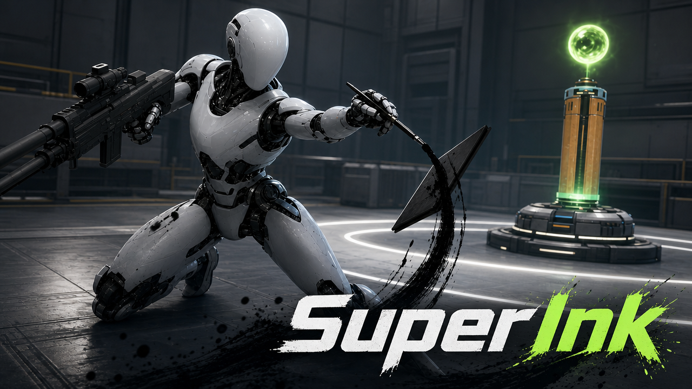

Player Authorship
Players create their own visual patterns instead of choosing only from predetermined weapon icons. Each pattern becomes a personal combat signature that can be practiced and refined.
Player input detected / move to create
SuperInk is a systemic FPS prototype where player-designed drawings become temporary combat objects.
Rather than only a tool for aiming.
Players design their own visual patterns, reproduce them under pressure, and watch the game translate their input into physical weapons.
I designed it. I drew it. I fought with it.
A successful drawing does more than produce a reward. It creates a weapon that immediately returns the player to FPS combat, where positioning, ammunition management, trigger discipline, movement, teamwork, and tactical planning still determine the outcome.
When that self-created weapon eliminates an enemy, the combat feedback amplifies the original satisfaction of drawing it. The player experiences the consequence of something they personally brought into existence.
Move across each principle. Every layer changes because the player made a mark.
Players create their own visual patterns instead of choosing only from predetermined weapon icons. Each pattern becomes a personal combat signature that can be practiced and refined.
Stroke structure, accuracy, and similarity influence whether a weapon is refined, stable, unstable, or fails to form.
Generated weapons are powerful but temporary. Ink, ammunition, and durability force the player to decide when creation is worth the cost.
Drawing gives players more agency, but never replaces position, aim, ammunition, trigger discipline, timing, coordination, or strategy.

Recognition is not purely binary. An imperfect drawing may still create an unstable weapon that jams, expires early, or collapses into ink—instead of ending at a simple error message.
Limited ammunition · possible jam
The drawing is theirs. The decision is theirs. The consequences are theirs.
B.S. Computer Science · GPA 3.8 / 4.0
Modern game engines · Computer graphics · Computer engineeringBuilt with Flask, React, SQLite, FastAPI microservices, and Docker.
Designed a geometric drawing-recognition pipeline using ordered stroke capture, normalization, resampling, direction structure, path length, and template similarity. LLM-assisted workflows support rapid system documentation, test-case ideation, and prototype iteration.